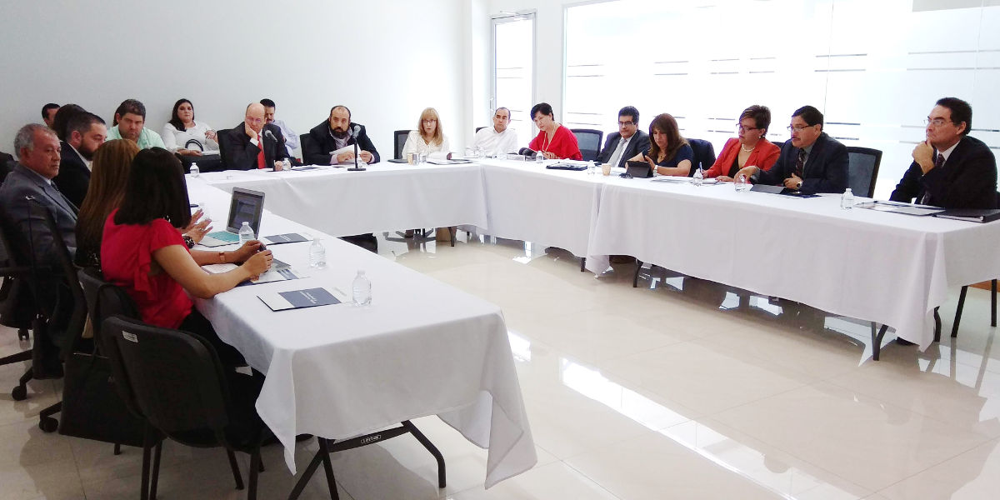
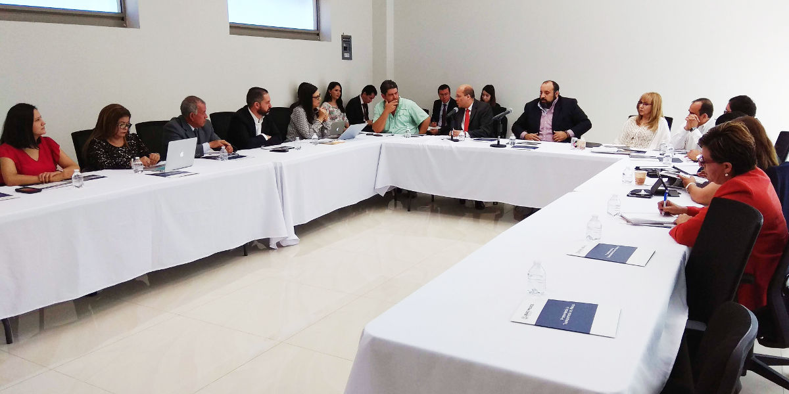

Saltillo, Coahuila a 12 de julio de 2018.
Integrantes del Comité Coordinador del Sistema Estatal Anticorrupción de Coahuila y representantes de la Agencia de los Estados Unidos para el Desarrollo Internacional (USAID), sostuvieron una reunión de trabajo a fin de implementar estrategias de colaboración en el ámbito local para atender el tema de combate a la corrupción.
El equipo de USAID encabezado por su director de proyectos, Eduardo Flores Trejo y los titulares de las instancias que conforman el Comité Coordinador, representado por Manuel Gil Navarro presidente del Consejo de Participación Ciudadana; dialogaron en torno al trabajo que desde el Sistema en Coahuila han venido realizando a partir de su conformación.

Por parte del Poder Judicial del Estado estuvo en la reunión su Presidenta la Magistrada Miriam Cárdenas Cantú, del Tribunal de Justicia Administrativa la Magistrada Sandra Rodríguez Wong; el titular de la Fiscalía Especializada en Delitos por Hechos de Corrupción, Jesús Humberto Flores Mier; el Presidente del Instituto Coahuilense de Acceso a la Información, Luis González Briseño; así como representantes de la Auditoria Superior del Estado y de la Secretaria de Fiscalización y Rendición de Cuentas del Estado.
También participaron en el encuentro los Consejero del Consejo de Participación Ciudadana de Coahuila; María de Lourdes de Koster López, Ana Yuri Solís y Carlos Rangel Orona; además de la Secretaria Técnica de la Secretaria Ejecutiva del Sistema Estatal Anticorrupción, Marcela Castañeda Agüero.
Durante la reunión cada uno de los integrantes del Comité Coordinador hablaron de las labores que desde las instancias que encabezan, han desarrollado e implementado para capacitar y difundir los alcances del Sistema Anticorrupción, tanto Estatal como Nacional.
A su vez Flores Trejo y su equipo expusieron los alcances del "Proyecto Promoviendo la Transparencia en México" que USAID viene implementado en el país a través de los Sistemas Anticorrupción con tares en temas de asistencia técnica, de divulgación y de capacitación.
Explicó que en algunas entidades y a nivel nacional se les ha apoyado con procesos de planeación estratégica, desarrollo y ejecución de procesos de consulta, elaboración de políticas anticorrupción, homologación de leyes en la materia, procesos de capacitación y diseño de materiales para la divulgación del Sistema Anticorrupción.
Los objetivos de USAID en estos temas, aclaró, son sin fines de lucro y con la única finalidad de conformar alianzas estratégicas y de cooperación con instancias de gobierno, organizaciones de la sociedad civil, universidades y toda aquella entidad del orden federal o estatal involucradas e interesadas en las acciones a favor de la transparencia, de la rendición de cuentas y el combate a la corrupción.
